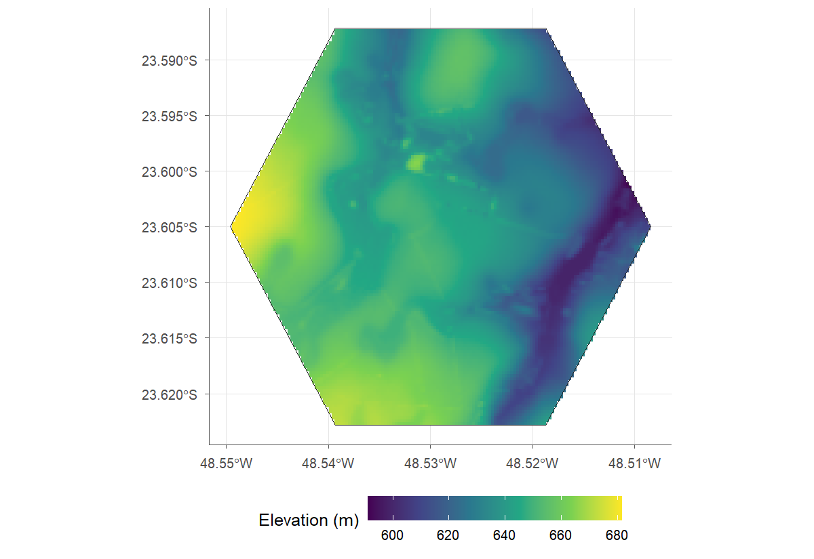
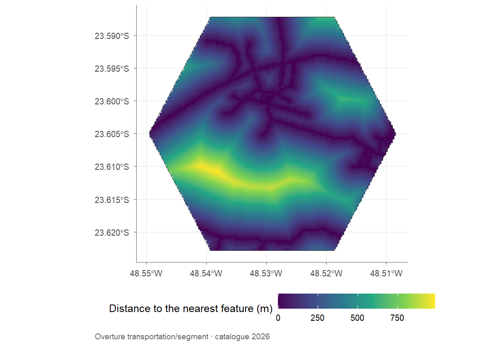
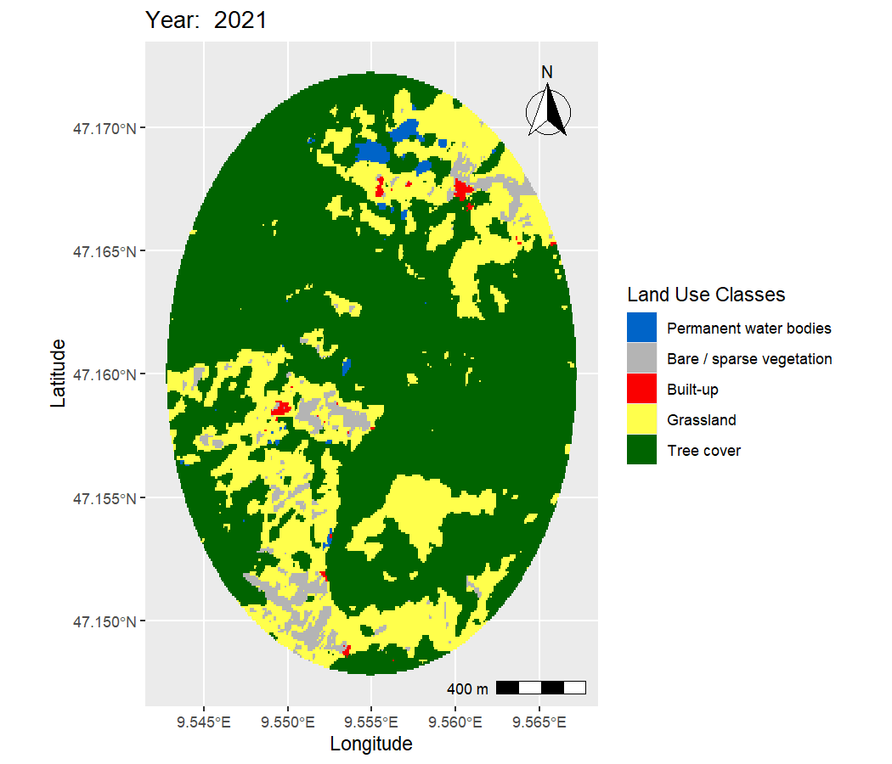

14 External layers
The external-layer functions take the same maps object and return results aligned to the same area, grid and coordinate reference system. Because they depend on public servers, the figures in this chapter were generated once and stored with the book.
Terrain and roads at Lagoa do Sino
load_physical() brings elevation, slope and aspect from the Copernicus DEM, as
well as soil properties from SoilGrids (clay, sand, silt, carbon, pH and
others), already resampled to the map grid. On slow connections, it is worth
raising the time limit, which defaults to 5 seconds:
terrain <- load_physical(maps, layers = c("elevation", "slope"), timeout = 30,
language = "en")
terrain$plots$elevation
Figure 14.1: Elevation (Copernicus DEM, 30 m) on the Lagoa do Sino map grid.
load_features() retrieves features from Overture Maps or from regional
OpenStreetMap extracts, and feature_raster() turns them into surfaces on the
analysis grid: distance, count, length, coverage or density.
roads <- load_features(maps, "roads", source = "overture")
distance <- feature_raster(roads, maps, feature = "roads", metrics = "distance",
language = "en")
distance$plots$distance
Figure 14.2: Distance to the nearest road (Overture Maps) at Lagoa do Sino.
For field points, distance_to_nearest() measures the geodesic distance to the
nearest feature or land use class. When the target is a class from the maps
themselves, no internet connection is needed:
points <- data.frame(lon = c(-48.529, -48.515), lat = c(-23.605, -23.590))
to_forest <- distance_to_nearest(points, maps, classes = 3)The centre of the campus is 327 m from the
nearest forest formation, and the second point is
847 m away. The same function also takes the
features from load_features(), as in
distance_to_nearest(points, roads, feature = "roads").
Outside Brazil: Liechtenstein
load_lulc() reads ESA WorldCover (10 m, 2020 and 2021) anywhere in the world
and returns an object identical in structure to that of load_rasters(). A
minimal example, near Vaduz, Liechtenstein:
area <- make_polygon(lat = 47.16, lon = 9.555, size = 2, shape = "circle")
cover <- load_lulc(area$polygon, years = 2021)
land_vis(cover, year = 2021)
Figure 14.3: Land cover (ESA WorldCover 2021) near Vaduz, Liechtenstein.
Since the format is the same, get_area(), class_diversity(), land_change()
and fragment_metrics() work unchanged, now with the official WorldCover legend
(dict_build("esa_worldcover")).